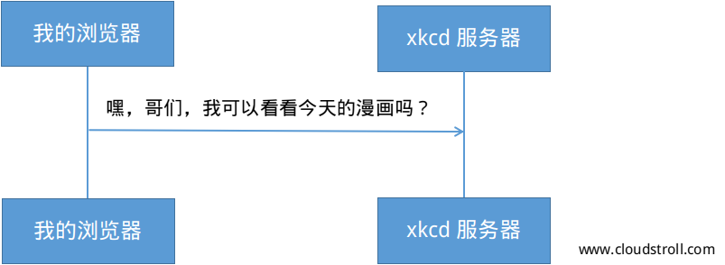

在web上的任何一次会话都是以一个请求开始的。这个由客户端（如：浏览器、智能手机APP等）创建的文本信息就是被以称之为HTTP的特定格式编码的。客户端发送请求出去，并等待服务器的返回响应。
看一下在客户端和xkcd服务器之间交互的第一步：

在HTTP会话中，HTTP请求实际上看起来是这样的：
这个简单的消息传达了资源客户端所需传达的所有必要的信息。HTTP请求的第一行是最重要的，包含了两个内容：URI和HTTP请求方式。
URI（如：/ ， /contact 等）是唯一的地址或位置，该地址或位置标识客户端所需要的资源。HTTP请求方式（如：GET，POST等）定义你想用资源做什么。HTTP请求方式是请求的动作，并定义在资源操作上所采用的几种常见的方法：
| GET | 从服务器上检索资源 |
| POST | 在服务器上创建资源 |
| PUT | 更新服务器上的资源 |
| DELETE | 删除服务器上的资源 |
由此，你可以想象一个删除某条博客项目的HTTP请求是什么样子，如下：
| 注解 |
| 在HTTP规范中有9种HTTP请求方式，它们中很多没有被广泛的应用和支持。事实上，现在依然有很多浏览器不支持 PUT 和 DELETE 请求方式。 |
除了第一行，一个HTTP请求还包含其它被称为请求头信息（Header）的行。请求头信息可以包含一个很宽广的信息范围如：请求的主机（Host），客户端接收响应的格式（Accept），客户端发送请求信息所使用的应用程序（User-Agent）。在WIKI的HTTP请求头信息列表的文章里面还有很多其它的请求头部信息存在。